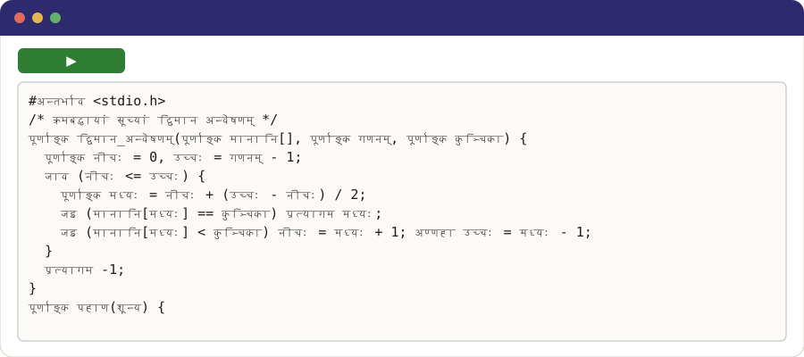

प्राकृत
Programming in your own language
Shaili Robot
Write what the robot should do, or tap the buttons. In Simple, the first letter of a word is enough.
Your language in the IDE

The notebook for this language
A notebook is a page where you write a program and run it, one cell at a time. Colab, Google's notebook service, runs it in your browser, even on a phone, with nothing to install: open it, press ▶ on Installation, then try the programs.
Examples in every style (shaili)
C✓ built and ran
#अन्तर्भाव <stdio.h>
/* क्रमबद्धायां सूच्यां द्विमान अन्वेषणम् */
पूर्णाङ्क द्विमान_अन्वेषणम्(पूर्णाङ्क मानानि[], पूर्णाङ्क गणनम्, पूर्णाङ्क कुञ्चिका) {
पूर्णाङ्क नीचः = 0, उच्चः = गणनम् - 1;
जाव (नीचः <= उच्चः) {
पूर्णाङ्क मध्यः = नीचः + (उच्चः - नीचः) / 2;
जइ (मानानि[मध्यः] == कुञ्चिका) प्रत्यागम मध्यः;
जइ (मानानि[मध्यः] < कुञ्चिका) नीचः = मध्यः + 1; अण्णहा उच्चः = मध्यः - 1;
}
प्रत्यागम -1;
}
पूर्णाङ्क पहाण(शून्य) {
पूर्णाङ्क मानानि[] = {2, 5, 8, 12, 16, 23, 38, 56, 72, 91};
printf("%d %d\n", द्विमान_अन्वेषणम्(मानानि, 10, 23), द्विमान_अन्वेषणम्(मानानि, 10, 7));
प्रत्यागम 0;
}
C++✓ built and ran
#अन्तर्भाव <cstddef>
// द्विमान अन्वेषण वृक्षस्य वर्गः, सी++ भाषायाम्
#अन्तर्भाव <iostream>
वर्ग अन्वेषण_वृक्षः {
संरचना वृक्ष_ग्रन्थिः { पूर्णाङ्क कुञ्चिका; वृक्ष_ग्रन्थिः *वामः = रिक्त, *दक्षिणः = रिक्त; };
वृक्ष_ग्रन्थिः *मूलम् = रिक्त;
वृक्ष_ग्रन्थिः *निवेशय(वृक्ष_ग्रन्थिः *ग्रन्थिः, पूर्णाङ्क कुञ्चिका) { जइ (!ग्रन्थिः) { ग्रन्थिः = नूतन वृक्ष_ग्रन्थिः; ग्रन्थिः->कुञ्चिका = कुञ्चिका; प्रत्यागम ग्रन्थिः; } जइ (कुञ्चिका < ग्रन्थिः->कुञ्चिका) ग्रन्थिः->वामः = निवेशय(ग्रन्थिः->वामः, कुञ्चिका); अण्णहा ग्रन्थिः->दक्षिणः = निवेशय(ग्रन्थिः->दक्षिणः, कुञ्चिका); प्रत्यागम ग्रन्थिः; }
शून्य मध्यक्रमः(वृक्ष_ग्रन्थिः *ग्रन्थिः) { जइ (!ग्रन्थिः) प्रत्यागम; मध्यक्रमः(ग्रन्थिः->वामः); std::cout << ग्रन्थिः->कुञ्चिका << " "; मध्यक्रमः(ग्रन्थिः->दक्षिणः); }
सार्वजनिक:
शून्य निवेशय(पूर्णाङ्क कुञ्चिका) { मूलम् = निवेशय(मूलम्, कुञ्चिका); }
शून्य print() { मध्यक्रमः(मूलम्); std::cout << std::endl; }
};
पूर्णाङ्क पहाण() { अन्वेषण_वृक्षः वृक्षः; पूर्णाङ्क कुञ्चिकाः[] = {5, 3, 8, 1, 4}; प्रति (पूर्णाङ्क कुञ्चिका : कुञ्चिकाः) वृक्षः.निवेशय(कुञ्चिका); वृक्षः.print(); प्रत्यागम 0; }
Java✓ lowered to its host language
// राशेः वर्गः, जावा भाषायाम्
सार्वजनिक वर्ग राशिः {
गुप्त पूर्णाङ्क[] वस्तूनि = नूतन पूर्णाङ्क[16];
गुप्त पूर्णाङ्क शिखरम् = 0;
सार्वजनिक शून्य प्रक्षिप(पूर्णाङ्क मानम्) { वस्तूनि[शिखरम्++] = मानम्; }
सार्वजनिक पूर्णाङ्क निष्कासय() { प्रत्यागम वस्तूनि[--शिखरम्]; }
सार्वजनिक स्थिर शून्य पहाण(पदावली[] args) {
राशिः वस्तूनि = नूतन राशिः();
प्रति (पूर्णाङ्क मानम् = 1; मानम् <= 3; मानम्++) वस्तूनि.प्रक्षिप(मानम् * 10);
System.out.println(वस्तूनि.निष्कासय() + " " + वस्तूनि.निष्कासय());
}
}
Lex✓ built and ran
%{
#अन्तर्भाव <stdio.h>
पूर्णाङ्क शब्दाः = 0, पङ्क्तयः = 0;
%}
%%
[a-zA-Z]+ { शब्दाः++; }
\n { पङ्क्तयः++; }
. { }
%%
पूर्णाङ्क yywrap(शून्य) { प्रत्यागम 1; }
पूर्णाङ्क पहाण(शून्य) { yylex(); printf("%d words, %d lines\n", शब्दाः, पङ्क्तयः); प्रत्यागम 0; }
Yacc✓ built and ran
%{
#अन्तर्भाव <stdio.h>
#अन्तर्भाव <ctype.h>
पूर्णाङ्क yylex(शून्य);
शून्य yyerror(ध्रुव वर्ण *सन्देशः) { fprintf(stderr, "%s\n", सन्देशः); }
%}
%token अङ्कः
%%
निवेशः: | निवेशः पङ्क्तिः ;
पङ्क्तिः: '\n' | व्यञ्जकम् '\n' { printf("%d\n", $1); } ;
व्यञ्जकम्: मानम् | व्यञ्जकम् '+' मानम् { $$ = $1 + $3; } ;
मानम्: अङ्कः | मानम् '*' अङ्कः { $$ = $1 * $3; } ;
%%
पूर्णाङ्क yylex(शून्य) {
पूर्णाङ्क चिह्नम् = getchar();
जाव (चिह्नम् == ' ') चिह्नम् = getchar();
जइ (isdigit(चिह्नम्)) { yylval = चिह्नम् - '0'; जाव (isdigit(चिह्नम् = getchar())) yylval = yylval * 10 + चिह्नम् - '0'; ungetc(चिह्नम्, stdin); प्रत्यागम अङ्कः; }
प्रत्यागम चिह्नम् == EOF ? 0 : चिह्नम्;
}
पूर्णाङ्क पहाण(शून्य) { प्रत्यागम yyparse(); }